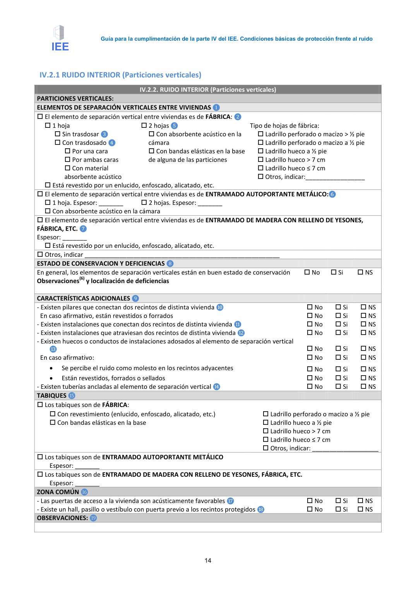

<!doctype html>
<html lang="es"><head><meta charset="utf-8">
<meta name="viewport" content="width=device-width, initial-scale=1">
<title>GUIA · Página física 14</title><link rel="stylesheet" href="../estilo.css">
</head><body>
<nav><a href="../index.html">Índice</a> › <a href="../doc/guia-pdf-a5d4ef5252ba-2016-11-01-813669d3066c.html">GUIA</a></nav>

<h1>GUIA · Página física 14</h1>
<header class="meta"><p><strong>IEE 2016</strong> · edición 2016-11-01 · capa guia</p>
<p>Documento <code>GUIA-PDF-a5d4ef5252ba</code> · SHA-256 del PDF <code>813669d3066c0ff79457d57b80b0512a4fbb248bc5db1f7baf473c369a064738</code></p>
<p>Página física 14 de 65.</p>
<p><a href="../../contenido/docs/GUIA-PDF-a5d4ef5252ba/2016-11-01__813669d3066c/fuente.pdf#page=14">Copia fiel del PDF fuente</a> · <a href="https://www.codigotecnico.org/pdf/Documentos/HR/IEE_2016.pdf">Fuente oficial</a></p>
<p><a href="https://www.codigotecnico.org/Guias/GuiaIEE_HR.html">Ficha de la disposición en la fuente oficial</a></p>
<div class="cita"><p><a href="../../contenido/docs/GUIA-PDF-a5d4ef5252ba/2016-11-01__813669d3066c/fuente.pdf#page=2">Créditos y autoría en el PDF fuente</a>. Reproducción con cita de fuente y autores.</p>
<p>Permiso literal: Se permite la reproducción del contenido total o parcial de esta Guía siempre y cuando se haga citando la fuente original.</p>
<details><summary>Leer los créditos completos y la autoría</summary><pre class="literal">                    Guía para la cumplimentación de la parte IV del IEE. Condiciones básicas de protección frente al ruido


Dirección y coordinación

Luis Vega Catalán

Mª Cristina Colomo Fernández

Eduardo González de Prado

Dirección General de Arquitectura, Vivienda y Suelo. Ministerio de Fomento

Mª Teresa Carrascal García

Instituto de Ciencias de la Construcción Eduardo Torroja. IETcc- CSIC


Autores

Mª Teresa Carrascal García

Amelia Romero Fernández

Mª Belén Casla Herguedas

Unidad de Calidad en la Construcción del Instituto de Ciencias de la Construcción Eduardo Torroja IETcc- CSIC


Se agradece la colaboración de


Belén Delgado Giménez

Fundación FIDAS

Alberto Esteban González

C.T.O. Estudios y proyectos – Gikesa

Giovanni Muzio

C.T.O. Estudios y proyectos

Francisco Labastida Azemar

Arquitecto, asesor CSCAE

Pedro F. Nogueira López

Universidad de A Coruña

Alejandro Sansegundo Sierra

Acústica SanSegundo


Esta Guía para la cumplimentación de la parte IV del IEE. Condiciones básicas de protección frente al ruido, nace en el marco del

convenio de colaboración llevado a cabo entre el Ministerio de Fomento y el Instituto de Ciencias de la Construcción Eduardo Torroja y

forma parte de la estrategia de este Ministerio de generar una serie de documentos de ayuda que faciliten la aplicación de la normativa

de la edificación y que en este caso concreto, ofrezca a los técnicos criterios para poder realizar una evaluación del estado inicial de las

edificaciones en lo referente a las condiciones acústicas de las viviendas existentes y plantear medidas que incrementen su confort

acústico.


En la redacción de este documento se ha utilizado algunos de los contenidos y de las figuras de la Guía de aplicación del DB HR

Protección frente al ruido. Dicha guía puede consultarse en:

http://www.codigotecnico.org/index.php/menu-documentos-complementarios/menu-guia-aplicacion-db-hr


Se permite la reproducción del contenido total o parcial de esta Guía siempre y cuando se haga citando la fuente original.


                                                2</pre></details></div>
<div class="aviso"><strong>Alcance y límites</strong><ul><li>Extracción automática sin revisión técnica humana completa. Contraste tablas, fórmulas, notas y excepciones con el PDF. La edición disponible no determina la vigencia ni la aplicabilidad a un proyecto.</li><li>Guia o documento divulgativo; no es texto normativo.</li><li>Extracción automática; el cotejo humano está pendiente.</li><li>Semántica y tablas no equivalen a validación exhaustiva.</li></ul></div></header>
<nav><a href="guia-pdf-a5d4ef5252ba-2016-11-01-813669d3066c__p0013.html">← Página 13</a> · <a href="guia-pdf-a5d4ef5252ba-2016-11-01-813669d3066c__p0015.html">Página 15 →</a></nav>
<p>Formato: <a href="../../contenido/docs/GUIA-PDF-a5d4ef5252ba/2016-11-01__813669d3066c/pagina/p0014.md">Texto de la página (Markdown)</a></p>
<p><a href="../../contenido/docs/GUIA-PDF-a5d4ef5252ba/2016-11-01__813669d3066c/bloque/p0014.json">JSON de bloques</a></p>
<pre class="literal"> 
Guía para la cumplimentación de la parte IV del IEE. Condiciones básicas de protección frente al ruido 
 
14 
IV.2.1 RUIDO INTERIOR (Particiones verticales) 
IV.2.2. RUIDO INTERIOR (Particiones verticales)  
PARTICIONES VERTICALES:  
ELEMENTOS DE SEPARACIÓN VERTICALES ENTRE VIVIENDAS ❶ 
 El elemento de separación vertical entre viviendas es de FÁBRICA: ❷ 
 
 
 
 1 hoja  
 Sin trasdosar ❸ 
 Con trasdosado ❹ 
 Por una cara  
 Por ambas caras  
 Con material 
absorbente acústico  
 2 hojas ❺ 
 Con absorbente acústico en la 
cámara 
 Con bandas elásticas en la base 
de alguna de las particiones  
Tipo de hojas de fábrica:  
 Ladrillo perforado o macizo &gt; ½ pie 
 Ladrillo perforado o macizo a ½ pie 
 Ladrillo hueco a ½ pie 
 Ladrillo hueco &gt; 7 cm 
 Ladrillo hueco ≤ 7 cm 
 Otros, indicar:_________________ 
 Está revestido por un enlucido, enfoscado, alicatado, etc. 
 
 
 
 El elemento de separación vertical entre viviendas es de ENTRAMADO AUTOPORTANTE METÁLICO:❻ 
 1 hoja. Espesor: _______ 
 2 hojas. Espesor: _______ 
 
 
 
 Con absorbente acústico en la cámara 
 
 
 
 
 El elemento de separación vertical entre viviendas es de ENTRAMADO DE MADERA CON RELLENO DE YESONES, 
FÁBRICA, ETC. ❼ 
Espesor: _______ 
 Está revestido por un enlucido, enfoscado, alicatado, etc. 
 
 
 
 Otros, indicar ________________________________________________________ 
 
 
 
ESTADO DE CONSERVACION Y DEFICIENCIAS ❽ 
 
 
 
En general, los elementos de separación verticales están en buen estado de conservación  
 No 
 Si 
 NS 
Observaciones(6) y localización de deficiencias 
 
 
 
 
 
 
 
CARACTERÍSTICAS ADICIONALES ❾ 
 
 
 
- Existen pilares que conectan dos recintos de distinta vivienda ❿ 
 No 
 Si 
 NS 
  En caso afirmativo, están revestidos o forrados 
 No 
 Si 
 NS 
- Existen instalaciones que conectan dos recintos de distinta vivienda ⓫ 
 No 
 Si 
 NS 
- Existen instalaciones que atraviesan dos recintos de distinta vivienda ⓬ 
 No 
 Si 
 NS 
- Existen huecos o conductos de instalaciones adosados al elemento de separación vertical 
⓭ 
 No 
 Si 
 NS 
  En caso afirmativo: 
 No 
 Si 
 NS 
• 
Se percibe el ruido como molesto en los recintos adyacentes 
 No 
 Si 
 NS 
• 
Están revestidos, forrados o sellados 
 No 
 Si 
 NS 
- Existen tuberías ancladas al elemento de separación vertical ⓮ 
 No 
 Si 
 NS 
TABIQUES ⓯ 
 
 
 
 Los tabiques son de FÁBRICA: 
 
 
 
 Con revestimiento (enlucido, enfoscado, alicatado, etc.) 
 Con bandas elásticas en la base 
 Ladrillo perforado o macizo a ½ pie 
 Ladrillo hueco a ½ pie 
 Ladrillo hueco &gt; 7 cm 
 Ladrillo hueco ≤ 7 cm 
 Otros, indicar: ___________________ 
 Los tabiques son de ENTRAMADO AUTOPORTANTE METÁLICO  
Espesor: _______ 
 Los tabiques son de ENTRAMADO DE MADERA CON RELLENO DE YESONES, FÁBRICA, ETC.  
Espesor: _______ 
ZONA COMÚN ⓰  
- Las puertas de acceso a la vivienda son acústicamente favorables ⓱ 
 No 
 Si 
 NS 
- Existe un hall, pasillo o vestíbulo con puerta previo a los recintos protegidos ⓲ 
 No 
 Si 
 NS 
OBSERVACIONES: ⓳ 
 
</pre>
<figure><a href="../../contenido/docs/GUIA-PDF-a5d4ef5252ba/2016-11-01__813669d3066c/figura/p0014.png"></a><figcaption>Página visual 14, para contrastar fórmulas, tablas y figuras.</figcaption></figure><h2>Tablas extraídas</h2><p>Datos candidatos: compruebe celdas y notas en el PDF.</p><ul><li><a href="../../contenido/docs/GUIA-PDF-a5d4ef5252ba/2016-11-01__813669d3066c/tabla/p0014_t01.json">p0014_t01.json</a></li></ul>
<h2>Segmentos que incluyen esta página</h2><ul>
<li><a href="../apartado/guia-pdf-a5d4ef5252ba-2016-11-01-813669d3066c__a0011.html">a0011 · Anejo 3. Valoración del aislamiento acústico de elementos de separación horizontales y sus mejoras / IV.2. CONDICIONES DE PROTECCIÓN FRENTE AL RUIDO (Según CTE-DB-HR) IV.2.1 RUIDO EXTERIOR</a></li>
<li><a href="../apartado/guia-pdf-a5d4ef5252ba-2016-11-01-813669d3066c__a0012.html">a0012 · Anejo 3. Valoración del aislamiento acústico de elementos de separación horizontales y sus mejoras / IV.2.1 RUIDO INTERIOR (Particiones verticales)</a></li>
</ul>
<footer>Generado estáticamente desde el corpus normalizado; sin JavaScript ni servicios externos. El HTML es una vista reproducible; conserve la fuente y la edición al citar.</footer>
</body></html>
